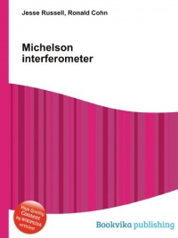
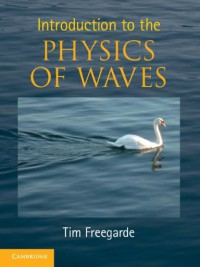
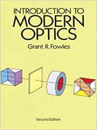

Historical Importance
In general, an interferometer is an optical instrument that produces optical interference. The Michelson interferometer became well known for its use by Albert Michelson and Edward Morley in the famous Michelson-Morley experiment (1887) in a configuration which would have detected the earth’s motion through the supposed luminiferous aether that most physicists at the time believed was the medium in which light waves propagated. The null result of that experiment essentially disproved the existence of such an aether, leading eventually to the special theory of relativity and the revolution in physics at the beginning of the twentieth century. The Michelson Interferometer has also been used to provide evidence for the special theory of relativity, to detect and measure hyperfine structure in line spectra, to measure the tidal effect of the moon on the earth and to provide a substitute standard for the meter in terms of wavelengths of light.
The Experiment
In the plane of observation (Figure 2), the electric field of the resulting wave is given by:
With:
Where n is the refraction index of the mean , λ₀ the wave length of light in vacuum and Δ the optical path difference. Making the maximum of interference when the argument of the function is a multiple of 2π, that is:
Is possible to change the pattern on the fringes by changing the distance traveled by each beam (l₁ or l₂) or by changing the refraction index (n) of where one of the beams passes.
With the movable mirror is possible to change the distance of the path of beam 1. When we move this mirror from a distance d, the beam propagates twice this (round-trip) displacement, and we observe the occurrence of a number of fringes Δm, that is:
From here a lot of different experiments are possible, such as, determine the wave length of a given light beam or measure how the refraction index of a given mean varies with pressure: example of laboratorial experiments.
Explanation
When the beams are recombined at the beam splitter before reaching the detector they interfere with each other either constructively or destructively.
During the constructive interference the two beams are in phase and the peaks of both beams reinforce each other resulting in a bright fringe, where as during the destructive interference the beams are out of phase and the peaks of one beam are cancelled by the troughs of the second beam resulting in a dark fringe.
The displacement of the measurement arm causes change in the relative phase of the two beams. This cycle of the destructive and constructive interference causes the intensity of the recombined light to undergo cyclic variation. One cycle of variation in intensity from light to dark to light occurs every time the measurement arm/retroreflector is moved by λ/2 (half of the light wavelength).
Therefore the movement is measured by calculating the number of cycles using the following formula:
Where d is the displacement, λ the wave length of the beam, and N the number of fringes passed. [4]


Aplications
Fourier transform spectrometer
The Michelson interferometer is essentially the basis for the implementation of a Fourier transform spectrometer,
this last one only varying by having one movable mirror. By making measurements of the signal at many discrete positions of the moving mirror is possible to generate an interferogram.
A Fourier transform converts the interferogram into an actual spectrum. Fourier transform spectrometers can offer significant advantages over dispersive (i.e. grating and prism) spectrometers under certain conditions.
The Michelson interferometer's detector in effect monitors all wavelengths simultaneously throughout the entire measurement.
When using a noisy detector, such as at infrared wavelengths, this offers an increase in signal to noise ratio while using only a single detector element;
the interferometer does not require a limited aperture as do grating or prism spectrometers, which require the incoming light to pass through a narrow slit in order to achieve high spectral resolution. This is an advantage when the incoming light is not of a single spatial mode. [1]
Gravitational waves detection
Michelson interferometry is one leading method for the direct detection of gravitational waves.
It does so by detecting tiny strains in space itself, affecting two long arms of the interferometer unequally,
due to a strong passing gravitational wave.
In 2015 the first detection of gravitational waves was accomplished using the LIGO instrument,
a Michelson interferometer with 4 km arms. This was the first experimental validation of gravitational waves,
predicted by Albert Einstein's General Theory of Relativity. With additional interferometers placed on other continents,
like the Virgo placed in Europe, it became possible to calculate the direction where the gravitational waves originate,
from the tiny time difference when the signals arrive at each station. An even larger Michelson interferometer in space,
to achieve greater sensitivity, is in the planning stages. [2]
Atmosphere and space
The Michelson Interferometer has been the base for the development of other more advanced models of such device for applications beyond the earth atmosphere it has played an important role in such field of studies, revealing temperatures and winds, employing both space-borne, and ground-based instruments, by measuring the Doppler widths and shifts in the spectra of airglow and aurora. For example, the Wind Imaging Interferometer, WINDII, on the Upper Atmosphere Research Satellite, UARS, (launched on September 12, 1991) measured the global wind and temperature patterns from 80 to 300 km by using the visible airglow emission from these altitudes as a target and employing optical Doppler interferometry to measure the small wavelength shifts of the narrow atomic and molecular airglow emission lines induced by the bulk velocity of the atmosphere carrying the emitting species. The instrument was an all-glass field-widened achromatically and thermally compensated phase-stepping Michelson interferometer, along with a bare CCD detector that imaged the airglow limb through the interferometer. A sequence of phase-stepped images was processed to derive the wind velocity for two orthogonal view directions, yielding the horizontal wind vector. [5]
The applications extend even more to the study solar variability and to characterize the Sun's interior along with the various components of magnetic activity. For this we have for example the Helioseismic and Magnetic Imager (HMI), on the Solar Dynamics Observatory. And there many others space applications where variants devices of the michelson's interferometer are applied.[6][7]Learn more
Apps and resources
Simulator
David Carvalho and Felipe Chen, students from Polythecnic Institute of Engeneering of Porto (ISEP), developed a programme to simulate the entire michelson interferometer experiment: download linkBooks
  